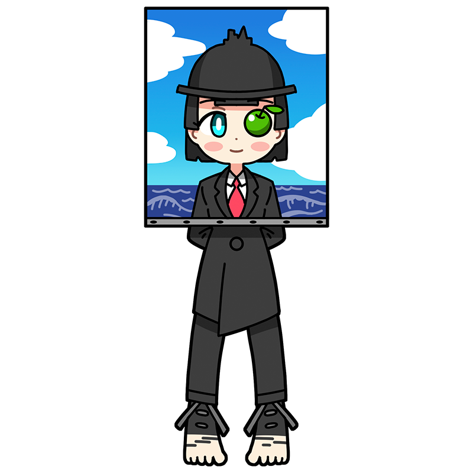

キャンバスの裏には何もないって、
いったい誰が決めたんですか？
マグリット
イメージが意識を裏切るとき
それは日常ではない、のかも
ベルギー出身のシュルレアリスムのミューズ。言葉とイメージを巧みに操って描いた絵画は人々を戸惑わせ、考え込ませる。しかし本人は決して答え合わせをしない。ただ、言葉遊びを楽しんでいるだけなのだから。
様式
シュルレアリスム
出身国
ベルギー
代表作
- "光の帝国"
- "白紙委任状"
- "ゴルコンダ" など
マグリットといえばこの一枚！
光の帝国
町並みを描いた風景画だが、街路樹を境に夜の街と昼の空が同時に存在している。昼も夜も私たちにとっては見慣れた光景のはずだが、一つの画面に並置されることで不思議な空間が生み出されている。これは、本来は出会うことのない要素を組み合わせる「デペイズマン」という、シュルレアリストたちが好んで用いた手法である。とりわけマグリットはこの技法を多用したことで知られる。なお、本作の制作にあたりイギリスの画家グリムショーを参考にしたともいわれている。
制作年
1954年
技法・材質
油彩、キャンバス
寸法
146 cm x 114 cm
所蔵
ベルギー王立美術館
(ベルギー)
マグリットってどんな芸術家？
ルネ・マグリット
ベルギー出身の画家。初期にはキュビスム風の肖像画を描いていたが、ダダイスムの影響を受けたデ・キリコの作品にいたく感動し、徐々にシュルレアリスム絵画へと傾倒していった。言葉やモチーフの持つイメージを逆手に取っただまし絵のような作品を特色とし、ともすれば難解と評されるその作風は、シュルレアリスムというグループの印象形成にも大きな影響を与えたといえる。自宅の台所にイーゼルを立て、スーツ姿で制作していたことでも知られている。
フルネーム
René François Ghislain Magritte
誕生
1898年11月21日
死没
1967年8月15日(68歳没)